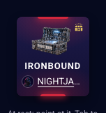
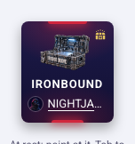
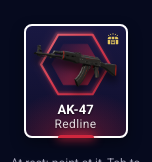
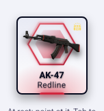
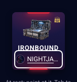
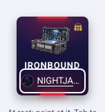
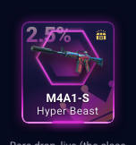
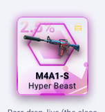

Feed tile
One drop in the live ticker: the skin over the stage's ring in its rarity, the weapon and the skin's name, the mode mark in the corner and a rarity bar on its foot. Pointed at, or with focus inside, its back face wipes in from the left on a slanted edge: the case it came from and who won it. Everything on this page is drawn by design/system/components/feed-tile.css through index.css, the same file a screen will load.
Anatomy

The tile holds three atoms and never redraws them: the Media slot (the skin, .media--skin), the Avatar (the winner, at its S size, .avatar--s, and .avatar--bot for a bot's empty disc, since D-264 Q5) and the Icon (the mode mark). The inventory also lists the Text link, but the tile's two links, the face and the winner's name, are its own forms and the product wears no .link there. The tile's own part is its plate, its rarity bar, the hexagon and the ring behind the skin, the back face that wipes in, and the rare drop's lights.
| Part | Class or element | What to change there |
|---|---|---|
| The tile | .feed-tile with a rarity (--gold to --consumer) | the plate in the ticker's ground, the corner (--radius-s), the bar on the foot in the rarity; with none the tile takes rarity 6. A tile grows to fit its names, never cut short by the ellipsis |
| Face link | .feed-tile__hit | one link to the round; its words are its aria-label (case, skin, tier, winner). The hexagon and the ring behind the skin are its ::before and ::after |
| Skin | .media.media--skin.feed-tile__art (Media slot) | wider than the ring (128 percent) and a little rotated under the pointer |
| Words | .feed-tile__w and .feed-tile__s | the weapon at 13px, the skin's name at 12px; 11px on a phone |
| Mode mark | .icon.icon--box.feed-tile__mode (Icon) | the mode the drop came from, in the gold, in the corner |
| Back face | .feed-tile__back | navy in both themes; wipes in from the left on a slanted edge under the pointer, and when focus is inside it |
| Case | .feed-tile__case with __case-art and __case-n | the case it came from, a link; the cover is --case-art |
| Winner | .feed-tile__who with .avatar.avatar--s (Avatar), __whon and, for a bot, __bot | a link to the player where the winner has a profile; a bot has no picture, so the Avatar's --bot disc stands and the word bot follows the name |
Variants and sizes
One axis of data, one of form and one of size. The rarity is the skin's, not the screen's: it colours the ring, the bar, the plate's light and the back face. Widths and heights are read from the rendered tiles.
- Rarity = the skin's own.
--goldthe rarest,--covert,--classified,--restricted,--milspec,--industrial,--consumerthe commonest, each setting--rarityto--bg-rarity-1to--bg-rarity-7. Unlike the cards, the tile does not take the lit steps of 4 and 5. - Size = the phone's or not. 104px wide above 600px; below it the ring, the skin, the padding and the words step down together (the block's
--feed-*custom properties, set once in@media (max-width: 599px)). The tile grows past its width to fit its names. - Form = what the drop is. A drop of its chance's mark (A, B or C) carries a moving layer that a script lays on; a rare drop (
--rarewith--volt,--orbitor--plasma) carries its chance in its corner, a crown and its own lights. Both are set by the script, shown below as the classes it sets.


Form: a bot, a rare drop
The first tile below is a bot's drop (point at it to see the empty disc and the word bot). The next three are the rare drop's three tiers once the script has made them live (.is-live, lit) or calm (.is-calm, after the next rare drop); the plasma tile also carries .is-hit. Their chance, crown, frame and landing are the tile's own spans (.feed-tile__rare); the moving rare mark of chance A, B or C (.rare-mark) is laid over a tile by the product's script and is not drawn here, because it is shared with the Drop card and the Case stage and is placed once by the parent.
When to use
To show that drops are happening now, one at a time, newest first, in the ticker under the header: the skin, its rarity and, one point away, the case and the winner. It is the live proof of the platform (design principle 1) and it keeps the page alive (principle 2): the tile's wipe and the rare drop's landing carry an emotional or an informational job, never decoration. It links to the round's public result. The names, cases and chances on this page are samples (D-124). A bot's drop says so in words; a bot has no picture and the disc stays empty.
Rule and anti-rule
Use it
The ticker, on every coloured screen: one tile per drop in a .ticker__i, newest first. The winner is the Avatar, the skin a Media slot, the mode mark an Icon.
Take another component
A best drop of one case, with its value and its winner, is a Recent drop card. An item a case can pay is a Drop card. A prize on the outcome screen is an Outcome card. A case is a Case tile. The strip that runs the tiles is the Ticker (round 3).
States
Live at rest, on this page's theme: point at the tile, reach it with Tab (the face, then the case, then the winner). The page does not run the product's script, so no rare mark moves and no landing plays; the rare drop is set in the markup as the classes the script sets.
Snapshots of the same instances, dark on the left and light on the right, taken with reduced motion so each shows the face the state settles on. The base set is shot once on the covert tile; after it, only a named difference.


--gradient-feed-back, --text-on-plate, --bg-rarity-2

--line-focus

--feed-tile-line-focus-back

--bg-rarity-3, --bg-lit, --color-rare-plasma-light- The same answer, said once: the tile has no press look (kit.css draws none), so none is shot. The avatar inside keeps its own look and adds no state. The rarity colours every state the same way, so only one rarity is shot.
- The back face wears the plate inks (
--text-on-plate,--text-base-on-plate) because its plate is navy in both themes. The face is the tile's plate, which turns to paper in the light theme, and wears--text-hi. - Hover and focus-within open the back face together; a keyboard reaches it through the case and the winner's links. Reduced motion shows the opened back at once, with no wipe, and no rare drop animates.
- No disabled look. A drop that cannot be linked has no tile.
node design/kit/tools/shoot-states.js http://localhost:8765/ feed-tile # re-shoot after a change to feed-tile.css or its tokens node design/kit/tools/shoot-states.js http://localhost:8765/ feed-tile --check # step 9: fails if a snapshot drifted
In the code
| Token | Kind | Dark | Light |
|---|
Read live from tokens.css. Two component tokens, both for the back face whose plate is navy in both themes: --feed-tile-text-bot (the word bot, a muted lavender, because no meta ink exists for a plate) and --feed-tile-line-focus-back (the white ring on that plate). Geometry, type and motion come from the primitives and the block's --feed-* and --rare-* custom properties, each with its origin. Colours read directly, all waiting for step 9: --gradient-feed-back, --shadow-feed-tile, --shadow-feed-skin, --shadow-feed-text and --color-feed-ring-deep (read in this block only), --color-gold (one of the six with one reader per surface), the rare drop's colours --color-rare-*, --color-crown-* (each used in exactly one place) and its lights --shadow-rare-* and --filter-rare-skin (depth with one reader).
File: design/system/components/feed-tile.css, loaded by design/system/index.css in the molecules' group.
<div class="feed-tile feed-tile--covert" data-chance="0.64">
<a class="feed-tile__hit" href="..." aria-label="Ironbound, AK-47 Redline, Covert, won by nightjar_cs">
<span class="media media--skin feed-tile__art" aria-hidden="true"><img src="..." alt=""></span><span class="feed-tile__w">AK-47</span><span class="feed-tile__s">Redline</span></a>
<div class="feed-tile__back">
<a class="feed-tile__case" href="..."><span class="feed-tile__case-art" style="--case-art: var(--art-case-ironbound)"></span><span class="feed-tile__case-n">Ironbound</span></a>
<a class="feed-tile__who" href="..."><img class="avatar avatar--s" src="..." alt="" aria-hidden="true"><span class="feed-tile__whon">nightjar_cs</span></a>
</div>
<span class="icon icon--box feed-tile__mode" aria-label="Case opening"></span>
</div>
Stands on: Home, the case screen, the catalogue, Deposit, My items, Provably fair, Sign in, inside the ticker's .ticker__i. Until step 8 those screens still read kit.css; step 6 moves their markup onto this file's forms by the rename map (D-264 Q5: a bot's disc is .avatar--bot). The ticker, which places the tiles and writes .ticker__i .feed-tile, is an organism of round 3.